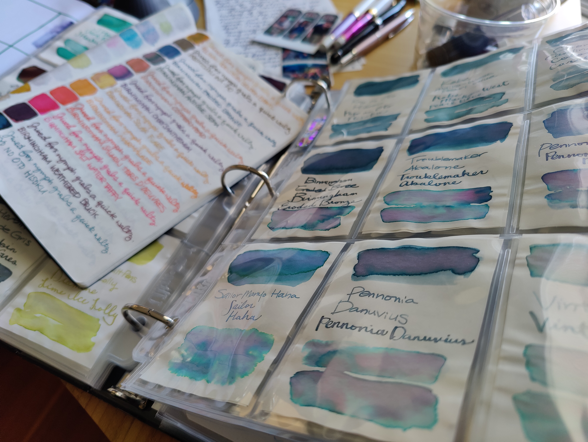

The Mom Test outlines rules for crafting good user conversations so that even your mom can give you objectively helpful insights about what you’re building.
TL;DR
- Good questions elicit answers that are grounded in concrete facts about our customers’ lives, world views, and actions.
- Bad questions do not. They can instead lead to false positives which lead you to build the wrong thing.
5 rules for good conversations
- Talk less and listen more.
- Talk about their life instead of your idea.
- Ask about the specifics from their past instead of generics, opinions, and hypotheticals about the future.
- Ask them to do a task to see where the problems really are.
- End every conversation with, “Who else should I talk to?” If someone doesn’t want to make intros, that’s cool, too. You’ve learned that you’re either screwing up the meeting (probably by being too formal, pitchy, or clingy) or they don’t actually care about the problem you’re solving.
Good questions
- Why is this a problem for you?
- When is the last time this problem affected you?
- Talk to me through the last time this happened.
- How did you try to fix it then?
- Why did you bother doing it this way?
- How are you dealing with it now?
- What else have you tried?
- How much did you spend on solution X?
- What feature did you find most or least helpful from solution X?
- Why did you want the feature?
- If you’re no longer using solution X, how are you currently coping without the feature?
Bad questions elicit…
- Niceties. “What do you think about my product?”
- Opinions. “What do you think about a product which does X?”
- Hypotheticals. “Would you buy this?”
- Future promises. “Will you sign up for the beta test when we launch?”
Take these with a grain of salt
Generally, these are ego-boosting remarks that reaffirm your bias towards what you’re building without any concrete validations.
- Compliments. They’re the fool’s gold of customer learning.
- Fluffs. These may lead to confirmation bias.
- Generic: “I usually, always, or never…”
- Future-looking: “I would” or “I will”
- Hypothetical: “I could” or “I might”
- Ideas. Some problems don’t actually matter. Some people are complainers, not customers; they want their petty annoyances of their day solved, but won’t have done anything to fix it.
This is a paraphrased exchange I had with someone. I didn’t pursue this problem further.
Finding conversations
You may start with cold calls, but the goal is to turn them into warm intros. Two ways of finding conversations include you going to them and bringing them to you.
Going to them:
- Cold calls
- Seizing the moment
- Through mutual friends and colleagues
- Finding a good excuse
- Being in the right place
Bringing them to you:
- Organizing meetups
- Speaking and teaching
- Blogging
- Getting creative in attracting attention
Example on getting creative: I love using my fountain pens and calligraphy pens for journaling my thoughts. I purposefully went into a co-working space, made ink swatches, and started journaling in the cafeteria until people started getting curious and asking why I’m watching my inks dry.
